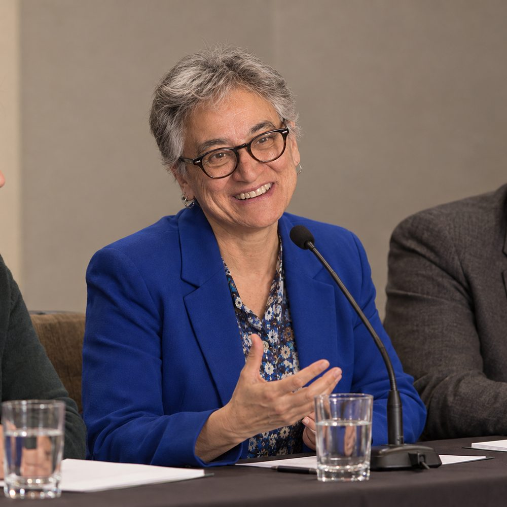
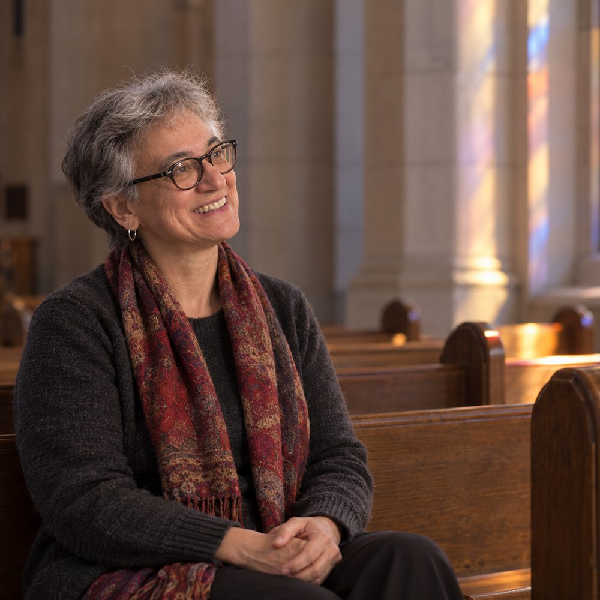

Boston College
Professor of Moral Theology in the Clough School of Theology and Ministry. Thirty years of Catholic moral theology, and the long work of moving disability from the margin of the field to the centre of it.
Read onMoral theology asks what a good life is and who is owed what. For a long time it asked those questions as though every person answering them could see the page, climb the step and speak for themselves. Dr. Iozzio's work began from the observation that this was never true, and that a theology which assumes it is producing an account of human flourishing that leaves out a great many humans.
Her Marquis citation records her as among the first scholars to integrate disability studies into Catholic moral theology. What that means in practice is a body of teaching, writing and editorial work built on intersectionality, Catholic social teaching, and the full personhood of disabled people.
She has taught at Boston College since 2013. Before that she spent two decades at Barry University in Miami, from 1993 to 2013.
She attributes the work to perseverance, a deep concern for those who have been marginalised or abused, and a refusal to let moral theology sit outside contemporary argument.
Widely regarded as one of the first scholars to integrate disability studies into Catholic moral theology.
Marquis Who's Who in the World citation, 20 March 2026
Professor of moral theology at Boston College since 2013, and before that a professor at Barry University from 1993. Preparing, teaching, reading new material, and writing. More than three decades of it.
Series editor for Thriving, a series of monographs and collected essays published by Bloomsbury Press since 2026. Five years as co-editor of the Journal of the Society of Christian Ethics. Book reviews and external evaluations of colleagues' work, which is the unglamorous service that keeps a discipline honest.
Advisory work with the Leadership Council on Interfaith Group Policy Initiatives, an ethics advisory group at Bon Secours Healthcare System, and the board of directors of NETWORK Lobby for Catholic Social Justice. Lector and eucharistic minister at her own parish. Saturday mornings at the Boston Food Bank.
She was an inaugural member of Boston College's delegation to COP26, the United Nations Framework Convention on Climate Change, in 2021, and has argued for social and climate justice at events since.
The work she names first when asked what she is proudest of.
A series of monographs and collected essays, Bloomsbury Press. Series editor since 2026.
Co-editor for more than five years.
Articles, chapters and essays across three decades.
Essays on disability justice, including accessibility in the national parks. Then a planned return to fundamental moral theology and the theological virtues, read through the Belgian scholar Odon Lottin.
Boston College
Papers in successive years
Georgetown University
Inaugural member of the Boston College delegation
Where she took both her MA in theology and her doctorate

On a conference panel
A quiet hour in the chapelEvery picture of Dr. Iozzio on this page is an AI-generated illustration, produced with her approval from a reference photograph. They are not photographs of the lectures, conferences or meetings named elsewhere on this site.
Twenty-second Edition.
Mount St. Joseph University.
Barry University, across her twenty years there.
Invitations to speak, questions about the writing, and enquiries from students and colleagues.
Simboli Hall 329
Clough School of Theology and Ministry
Boston College